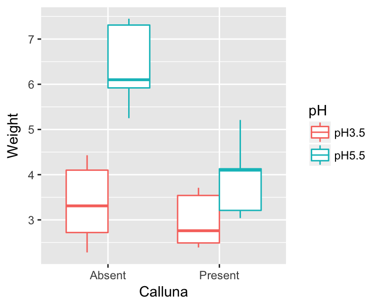
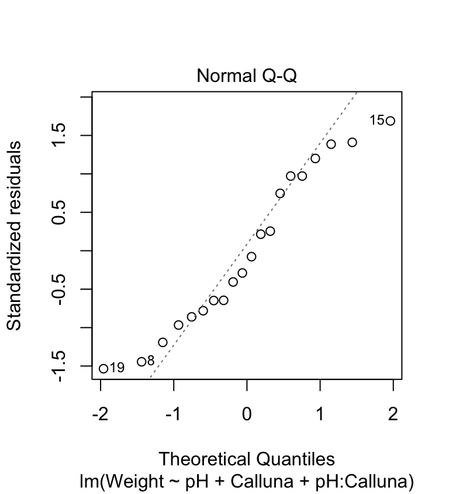
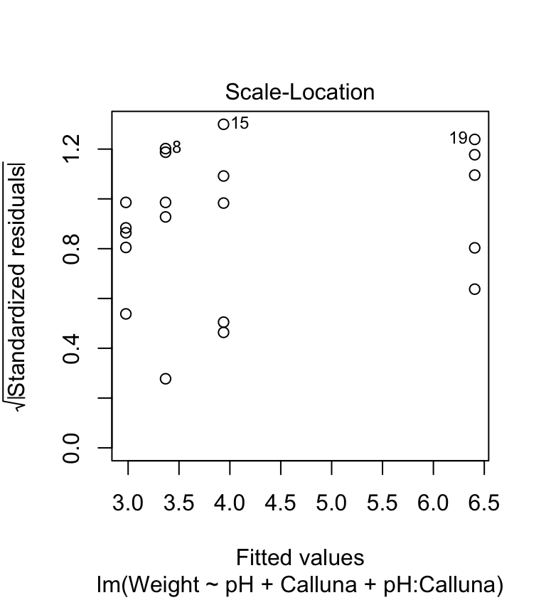
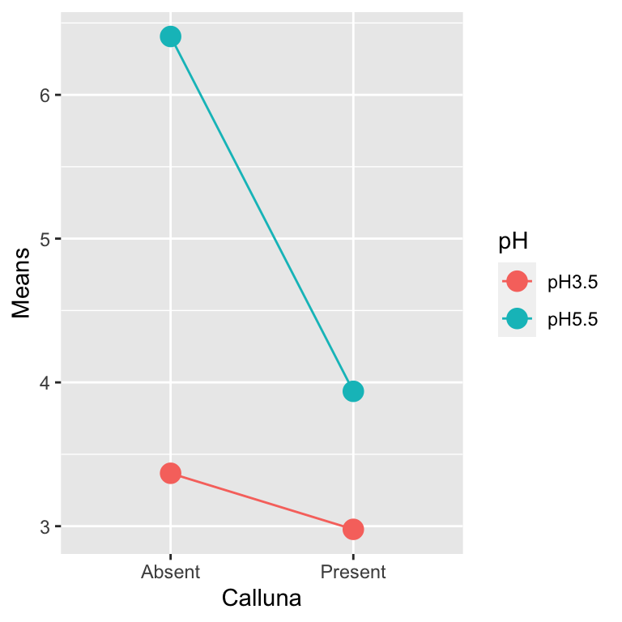
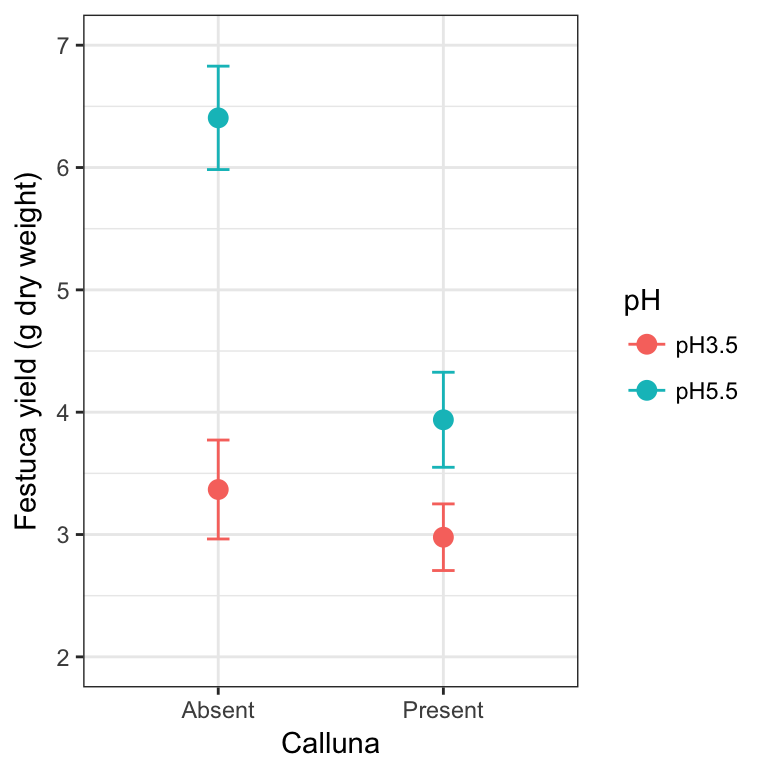
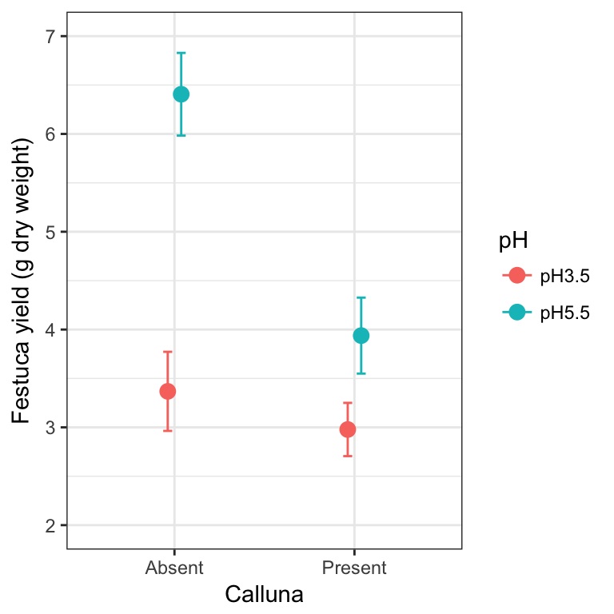
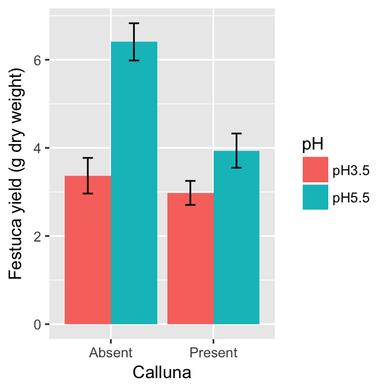

Chapter 27 Two-way ANOVA in R
27.1 Introduction
Our goal in this chapter is to learn how to work with two-way ANOVA models in R, using an example from a plant competition experiment. The work flow is very similar to one-way ANOVA in R. We’ll start with the problem and the data, and then work through model fitting, evaluating assumptions, significance testing, and finally, presenting the results.
27.2 Competition between Calluna and Festuca
Plants have an optimal soil pH for growth, and this varies between species. Consequently we would expect that if we grow two plants in competition with each other at different pH values the effect of competition might vary according to the soil pH. In a recent study the growth of the grass Festuca ovina (Sheep’s Fescue) in competition with the heather Calluna vulgaris (Ling) was investigated in soils with different pH. Calluna is well adapted to grow on very acidic soils such as on the Millstone grit and blanket bogs around Sheffield. Festuca grows on soils with a much wider range of pH. We might hypothesise that Calluna will be a better competitor of Festuca in very acid soils than in moderately acid soils.
To test this hypothesis an experiment was designed in which Festuca seedlings were grown in pots at all combinations of two levels of two different kinds of treatment:
Factor 1: Soil pH at 3.5 or 5.5
Factor 2: Presence or absence of Calluna.
This is a fully factorial, two-way design. The total number of treatments was thus \(2 \times 2 = 4\). For each of the treatments there were 5 replicate pots, giving a total of \(2 \times 2 \times 5 = 20\) pots.
The following data are the yields of Festuca from each treatment (dry weight in g) from the two pH levels and in the presence or absence of Calluna.
| pH 3.5 | pH 5.5 | |
|---|---|---|
| Calluna Present | 2.76, 2.39, 3.54, 3.71, 2.49 | 3.21, 4.10, 3.04, 4.13, 5.21 |
| Calluna Absent | 4.10, 2.72, 2.28, 4.43, 3.31 | 5.92, 7.31, 6.10, 5.25, 7.45 |
Walk through
You should begin working through the Festuca example from this point.
The data are in a CSV file called FESTUCA.CSV. We’ll read the data into an R data frame, giving it the name festuca, and then print the whole data frame to the Console (View is another option here):
festuca <- read.csv(file = "FESTUCA.CSV")## Weight pH Calluna
## 1 2.76 pH3.5 Present
## 2 2.39 pH3.5 Present
## 3 3.54 pH3.5 Present
## 4 3.71 pH3.5 Present
## 5 2.49 pH3.5 Present
## 6 4.10 pH3.5 Absent
## 7 2.72 pH3.5 Absent
## 8 2.28 pH3.5 Absent
## 9 4.43 pH3.5 Absent
## 10 3.31 pH3.5 Absent
## 11 3.21 pH5.5 Present
## 12 4.10 pH5.5 Present
## 13 3.04 pH5.5 Present
## 14 4.13 pH5.5 Present
## 15 5.21 pH5.5 Present
## 16 5.92 pH5.5 Absent
## 17 7.31 pH5.5 Absent
## 18 6.10 pH5.5 Absent
## 19 5.25 pH5.5 Absent
## 20 7.45 pH5.5 AbsentNotice that the data for a two-factor experiment can be laid out in a very similar manner to those from a one factor experiment, with the response variable in one column, but now there are two additional columns containing the codes for the treatments, one for pH and one for Calluna. The first column (Weight) contains the Festuca dry weights, the second column (pH) contains the codes for the pH treatment (levels: pH3.5, pH5.5), the third column (Calluna) contains the codes for the presence or absence of Calluna (levels: Present, Absent).
A couple of points are worth noting at this point:
As is always the case in this book, the data are ‘tidy’. Each experimental factor is in one column and each observation is in a single row. Last year we pointed out that data need to be in this format to be used effectively with
dplyr. The same applies to the majority of R’s statistical modelling tools—they expect data to be supplied in this format.We avoided using numbers to encode the levels of the pH treatment. This is important, as it ensures that the
pHvariable will be converted into a factor rather than a number when we read the data into R. We have said it before, but it is worth saying one more time: fewer mistakes will occur if we use words to encode the levels of a factor.
27.3 Visualising the data
We should take a look at the data before doing anything with it. We only have five replicates per treatment combination, so any figure we produce is going to provide only limited information. Five replicates is just about sufficient for a box plot:
ggplot(data = festuca, aes(x = Calluna, y = Weight, colour = pH)) +
geom_boxplot()
The main purpose of a plot like this is to help us understand what the treatments are doing. We want to quickly assess things like: How big are the main effects? What direction do they work in? Is there likely to be an interaction? It looks like the higher pH conditions tends to increase Festuca growth, and the presence of Calluna tends to reduce it (yes, plants compete!). The more interesting observation is that the effect of Calluna seems to be greater at higher pH. It looks like we might have an interaction.
The next thing we should do is check whether any of the assumptions have been violated. We can do this using the regression diagnostics that we learnt about in the Diagnostics chapter. To do this we need to fit the model first.
27.4 Fitting the ANOVA model
Carrying out a two-way ANOVA in R is really no different from one-way ANOVA. It still involves two steps. First we have to fit the model using the lm function, remembering to store the fitted model object. This is the step where R calculates the relevant means, along with the additional information needed to generate the results in step two. The second step uses the anova function to calculate F-statistics, degrees of freedom, and p-values.
Here is the R code needed to carry out the model-fitting step with lm:
festuca_model <- lm(Weight ~ pH + Calluna + pH : Calluna, data = festuca)This is very similar to the R code used to fit a one-way ANOVA model. The first argument is a formula (notice the ‘tilde’ symbol: ~) and the second argument is the name of the data frame that contains all the variables listed in the formula. That’s all we need.
The specific model fitted by lm is a result of 1) the type of variables referenced in the formula, and 2) the symbols used to define the terms in the formula. To ensure that we have fitted an ANOVA model, the variables which appear to the right of the ~ must be factors or character vectors—an ANOVA only involves factors. The variable name to the left of the ~ is the numeric response variable we are analysing. We know that Calluna and pH are factors, so we can be certain that lm has fitted some kind of ANOVA model.
What kind of ANOVA have we fitted, i.e., what are the terms on the right hand side of the formula doing? Here is the formula we used:
Weight ~ pH + Calluna + pH:CallunaThere are three terms, each separated by a + symbol: pH, Calluna and pH:Calluna. This tells R that we want to fit a model that accounts for the main effects of pH and Calluna, and that we also wish to include the interaction between these two factors. The specification of the main effects is fairly self-explanatory—we just include the name of each factor variable in the formula. The interaction term is less obvious. It is specified by a colon (the : symbol) with the two interacting variables either side of it.
In summary… 1) the ~ symbol specifies a formula in R, where the name on the left hand side is the response variable we are analysing, and the names on the right denote the terms in the model; 2) we place a + between terms to delineate them (we are not adding anything up when the + is used in a formula); 3) each main effect is specified by the corresponding factor name; and 4) an interaction between factors is specified by the : symbol.
Notice that we assigned the result a name (festuca_model) which now refers to the model object produced by lm. Just as with a one-way ANOVA, we can’t extract p-values by printing this object to the console, because all this gives us is a limited summary of the fitted model’s coefficients:
festuca_model##
## Call:
## lm(formula = Weight ~ pH + Calluna + pH:Calluna, data = festuca)
##
## Coefficients:
## (Intercept) pHpH5.5 CallunaPresent
## 3.368 3.038 -0.390
## pHpH5.5:CallunaPresent
## -2.078We’re not going to worry about what those mean for a two-way ANOVA. We’re going to use anova to calculate things like degrees of freedom, sum of squares, mean squares, F-statistics, and finally, the p-values. But… before we do that, let’s check our assumptions now that we have a fitted model object.
27.5 Diagnostics
We’re going to produce two diagnostic plots: a normal probability plot to evaluate the normality assumption, and a scale-location plot allows us to evaluate the constant variance assumption. Here’s the normal probability plot:
plot(festuca_model, which = 2, add.smooth = FALSE)
This plot allows us to check whether the deviations from the group means (the residuals) are likely to have been drawn from a normal distribution. This looks… not so great. The points deviate from the line in a systematic way so it looks like the normality assumption may not be satisfied. The left tail is above the line and the right tail is below it. This tells us that the tails of the residual distribution do not extend out as far as they should—the distribution is ‘squashed’ toward its middle.
The scale-location plot allows us to see whether or not the variability of the residuals is roughly constant within each group. Here’s the plot:
plot(festuca_model, which = 3, add.smooth = FALSE)
We’re on the lookout for a systematic pattern in the size of the residuals and the fitted values—does the variability go up or down with the fitted values? There is no such pattern so it looks like the constant variance assumption is at least satisfied here.
We’ve identified one potential problem. We’ll ignore it for now and press on. The goal here is to learn the work flow for two-way ANOVA in R. However, keep in mind that if we were serious about the analysis we should find a way to ‘fix’ it, for example using the methods we discussed in the Data transformations chapter.
27.6 Interpreting the results
Now we’re ready to calculate the degrees of freedom, sums of squares, mean squares, the F-ratio, and p-values for the main effects and the interaction terms:
anova(festuca_model)## Analysis of Variance Table
##
## Response: Weight
## Df Sum Sq Mean Sq F value Pr(>F)
## pH 1 19.9800 19.9800 28.1792 7.065e-05 ***
## Calluna 1 10.2102 10.2102 14.4001 0.00159 **
## pH:Calluna 1 5.3976 5.3976 7.6126 0.01397 *
## Residuals 16 11.3446 0.7090
## ---
## Signif. codes: 0 '***' 0.001 '**' 0.01 '*' 0.05 '.' 0.1 ' ' 1What does all this mean? We interpret each line of the ANOVA table in exactly the same way as we do for a one-way ANOVA. The first part tells us what kind of output we are looking at:
## Analysis of Variance Table
##
## Response: WeightThis reminds us that we are looking at an ANOVA table where our response variable was called Weight. The table contains the key information:
## Df Sum Sq Mean Sq F value Pr(>F)
## pH 1 19.9800 19.9800 28.1792 7.065e-05 ***
## Calluna 1 10.2102 10.2102 14.4001 0.00159 **
## pH:Calluna 1 5.3976 5.3976 7.6126 0.01397 *
## Residuals 16 11.3446 0.7090This ANOVA table is similar to the ones we have already seen, except that now we have to consider three lines—one for each term in the model. The first is for the main effect of pH, the second for the main effect of Calluna, the third for the interaction between pH and Calluna.
The F-ratio is the test statistic for each term. These provide a measure of how large and consistent the effects associated with each term are. Each F-ratio has a pair of degrees of freedom associated with it: one belonging to the term itself, the other due to the error (residual). Together, the F-ratio and its degrees of freedom determines the p-value.
The p-value gives the probability that the differences between the set of means for each term in the model, or a more extreme difference, could have arisen through sampling variation under the null hypothesis of no difference. We take p < 0.05 as evidence that at least one of the treatments is having an effect. Here, p < 0.05 for three effects, so we conclude both main effects and the interaction are significant (though at different significance levels).
The ANOVA table tells us nothing about the direction of the effects. We have to delve a little further into the fitted model or plot the data to be able to do this. The presence of an interaction between treatments indicates that the impact of one factor depends on the levels of the other factor. This means that if there is a significant interaction in a two-way ANOVA, then the main effects should be interpreted with care.
An ‘interaction diagram’ provides a good way to think about these issues…
27.6.1 Understanding the model graphically
How should we go about interpreting the significant effects? To reiterate, the interaction tells us that the magnitude, or even direction, of the effect of one factor is dependent upon the levels of the other factor. In other words the treatment effects are contingent on one another. This contingency can arise in a number of ways, giving rise to different mixtures of main effects and interactions. This is illustrated most easily by considering some hypothetical results from a pH/Calluna experiment of this sort, in schematic form (the Calluna bars are linked by a dotted line):

Diagrams such as these are sometimes called ‘interaction diagrams’ and they are often the best way of looking at the results from this sort of experiment to try and interpret what is happening. You will notice that the lines linking the treatments are parallel when there is no interaction, but become non-parallel when an interaction is present. An interaction may just mildly change the way the main effects work (4th plot) or it might completely reverse the effects (5th plot).
We can use R to produce an interaction diagram for a two-way design. We’ll use dplyr and ggplot2 to construct this for the example. First we have to calculate the mean weight of Festuca in each treatment combination:
# step 1. calculate means for each treatment combination
festuca_means <-
festuca %>%
group_by(Calluna, pH) %>% # <- remember to group by *both* factors
summarise(Means = mean(Weight))
festuca_means## # A tibble: 4 x 3
## # Groups: Calluna [?]
## Calluna pH Means
## <fctr> <fctr> <dbl>
## 1 Absent pH3.5 3.368
## 2 Absent pH5.5 6.406
## 3 Present pH3.5 2.978
## 4 Present pH5.5 3.938The key to making the plot is to specify four aesthetic mappings, and then add two layers, one showing points and the other showing lines:
# step 2. plot these as an interaction plot
ggplot(festuca_means,
aes(x = Calluna, y = Means, colour = pH, group = pH)) +
geom_point(size = 4) + geom_line()
Notice that we mapped pH to two aesthetics: colour and group. This ‘trick’ makes ggplot2 link the levels of pH with lines, each of which gets its own colour.
This clearly reveals how the different effects are working. Our interaction plot resembles the 4th hypothetical outcome. It is possible to make some interpretation of the main effects—namely that increase in pH, and removal of Calluna increase Festuca yield. However, the magnitude of these effects is dependent on the other (interaction)—the effect of Calluna is increased at higher pH.
27.7 Multiple comparison tests
Obviously, since the main treatments only have two levels there is no need for any multiple comparison tests on the main effects — if there is a difference it must be between the two levels. However, the interaction is significant, so it may be desirable to know which particular treatment combinations differ. Predictably, the work flow is very similar to that applied to a one-way ANOVA model.
We could use the TukeyHSD function to do this. We start by converting the model object produced by lm into an aov object…
festuca_aov <- aov(festuca_model)…and then we perform a Tukey HSD test:
TukeyHSD(festuca_aov, which = 'pH:Calluna')We have suppressed the output for now. The only new tweak that we have to learn is the which argument. Assigning this the value 'pH:Calluna' makes the TukeyHSD function carry out all pairwise comparisons among the means of each treatment combination, i.e., we are considering the full set of interactions. Here is the output:
## Tukey multiple comparisons of means
## 95% family-wise confidence level
##
## Fit: aov(formula = festuca_model)
##
## $`pH:Calluna`
## diff lwr upr p adj
## pH5.5:Absent-pH3.5:Absent 3.038 1.5143518 4.5616482 0.0001731
## pH3.5:Present-pH3.5:Absent -0.390 -1.9136482 1.1336482 0.8826936
## pH5.5:Present-pH3.5:Absent 0.570 -0.9536482 2.0936482 0.7117913
## pH3.5:Present-pH5.5:Absent -3.428 -4.9516482 -1.9043518 0.0000443
## pH5.5:Present-pH5.5:Absent -2.468 -3.9916482 -0.9443518 0.0014155
## pH5.5:Present-pH3.5:Present 0.960 -0.5636482 2.4836482 0.3079685You extract information from this table just as you did before. The table present a series of pair-wise comparisons between mean values tested by the Tukey procedure. For example, the first 3 lines show the significance of differences between the mean of the treatment combination pH 3.5 without Calluna and the 3 other mean values. All we need from this table is to note the codes for the treatment means which are being compared (listed in the first column), and the p-value in each case listed in the final column.
If we list the mean values in sequence from the lowest to the highest we can then use the results presented in these tables of pair-wise comparisons to derive letter codes to indicate which means differ significantly (at p<0.05) in exactly the same way as you did last week. There are three significant differences, all of which involve the treatment combinations pH 5.5 with Calluna absent. This implies that there are two ‘not significantly different’ groups: one defined by pH 5.5 with Calluna absent, and then everything else.
As you might expect, we don’t have to step through the results of the TukeyHSD function to define the ‘not significantly different’ groups. We used the agricolae package to do this for a one-way ANOVA. We can use this again here. We need to load and attach the package first (it may also need to be installed if you are on a university computer):
library(agricolae)Once the package is ready for use, we can carry out the Tukey HSD test to find the ‘not significantly different’ groups using the HSD.test function:
HSD.test(festuca_aov, trt = c("pH", "Calluna"), console = TRUE)##
## Study: festuca_aov ~ c("pH", "Calluna")
##
## HSD Test for Weight
##
## Mean Square Error: 0.709035
##
## pH:Calluna, means
##
## Weight std r Min Max
## pH3.5:Absent 3.368 0.9042511 5 2.28 4.43
## pH3.5:Present 2.978 0.6089089 5 2.39 3.71
## pH5.5:Absent 6.406 0.9451614 5 5.25 7.45
## pH5.5:Present 3.938 0.8685448 5 3.04 5.21
##
## Alpha: 0.05 ; DF Error: 16
## Critical Value of Studentized Range: 4.046093
##
## Minimun Significant Difference: 1.523648
##
## Treatments with the same letter are not significantly different.
##
## Weight groups
## pH5.5:Absent 6.406 a
## pH5.5:Present 3.938 b
## pH3.5:Absent 3.368 b
## pH3.5:Present 2.978 bSetting the trt argument to c("pH", "Calluna") makes the function carry out all pair-wise comparisons among the mean values defined by each treatment combination. The output that matters is the table at the very end, which shows the group identities as letters, the treatment names, and the treatment means. This just reiterates what we already knew—there are two ‘not significantly different’ groups, defined by pH 5.5 with Calluna absent, and ‘everything else’.
Multiple comparison tests for main effects
As mentioned above, in this experiment there is no point in trying to make further comparisons between the means from the main treatments (pH 3.5 and 5.5, or with and without Calluna) since (a) there is a significant interaction, so detailed comparisons of the main effects are hard to interpret, and (b) even if that was not the case there are only two levels in each treatment so any difference must be between those two levels!
However, it is quite common to have experiments with more than two levels in one or both factors. If the ANOVA indicates that there is a significant effect of one, or both, of the associated effects, and there is no interaction to worry about (don’t forget this caveat), then you may wish to carry out multiple comparisons for the means associated with the main effects.
This can be done using a Tukey test just as we did for the interaction in this example. The only difference is that we have to specify the name of the main effect you are interested in. For example, if we wanted to use TukeyHSD function to evaluate the significance of the pH main effects, we would use: TukeyHSD(festuca_aov, which = ‘pH’)
27.8 Drawing conclusions and presenting results
In the results section of the report we will need to provide a succinct factual summary of the analysis:
There were significant effects of soil pH (ANOVA: F=28.18, df=1,16, p<0.001), competition with Calluna (F=14.4, df=1,16, p=0.002) and the interaction between these treatments (F=7.61, df=1,16, p=0.014) on the dry weight yield of Festuca. Festuca grew much better in the absence of Calluna at high pH than in any other treatment combination (Tukey multiple comparison test p<0.05) (Figure 1).
For presentation we could tabulate the results, or better still present them as a figure rather like the interaction diagrams we saw earlier. We can of course produce such a figure, though we should include the standard errors of each mean to use it in a report or presentation. We’ll round off this section by looking at how to produce these publication-ready figures.
You won’t be assessed on your ability to produce summary plots such as those below. But yes, you should learn how to make them because you will need to produce these kinds of figures in your own projects. The good news is that the figures below are as complicated as things will get in this book.
We want to plot some sample statistics (means and standard errors) so we first have to calculate these using dplyr:
# step 1. calculate means for each treatment combination
festuca_stats <-
festuca %>%
group_by(Calluna, pH) %>% # <- remember to group by the two factors
summarise(Means = mean(Weight), SEs = sd(Weight)/sqrt(n()))
festuca_stats## # A tibble: 4 x 4
## # Groups: Calluna [?]
## Calluna pH Means SEs
## <fctr> <fctr> <dbl> <dbl>
## 1 Absent pH3.5 3.368 0.4043934
## 2 Absent pH5.5 6.406 0.4226890
## 3 Present pH3.5 2.978 0.2723123
## 4 Present pH5.5 3.938 0.3884250Once we’ve constructed a data frame containing the descriptive statistics we can make a plot:
# step 2. plot these as an interaction plot
ggplot(festuca_stats,
aes(x = Calluna, y = Means, colour = pH,
ymin = Means - SEs, ymax = Means + SEs)) +
# this adds the mean
geom_point(size = 3) +
# this adds the error bars
geom_errorbar(width = 0.1) +
# controlling the appearance
scale_y_continuous(limits = c(2, 7)) +
xlab("Calluna") + ylab("Festuca yield (g dry weight)") +
# use a more professional theme
theme_bw()
This is very similar to the ggplot2 code used to make the summary figure in the one-way ANOVA example. We set the data argument in ggplot to be the data frame containing the statistics (not the original raw data), and this time, we set up five aesthetic mappings: x, y, colour, ymin and ymax. We use the colour aesthetic to delineate the levels of pH. We added two layers: one layer is added with geom_point to include the individual points based on the x and y mappings; the second layer is added with geom_errorbar to include the error bars based on the x, ymin and ymax mappings.
27.8.1 A little more customisation
It is not uncommon to find that two or more means are quite close to one another, and as a result, plotted points and/or standard errors overlap. We can tweak a figure to avoid this by moving the plotted points a little to one side. The trick is to use the position_dodge function to define a ‘position adjustment’ object, and then associated this with position arguments in geom_errorbar and geom_point:
# define a position adjustment
pos <- position_dodge(0.15)
# make the plot
ggplot(festuca_stats,
aes(x = Calluna, y = Means, colour = pH,
ymin = Means - SEs, ymax = Means + SEs)) +
# this adds the mean (shift positions with 'position =')
geom_point(size = 3, position = pos) +
# this adds the error bars (shift positions with 'position =')
geom_errorbar(width = 0.1, position = pos) +
# controlling the appearance
scale_y_continuous(limits = c(2, 7)) +
xlab("Calluna") + ylab("Festuca yield (g dry weight)") +
# use a more professional theme
theme_bw()
Look at the new positions of the points and error bars at each level of Calluna—they have shifted very slightly to the left and right. We don’t need to do this in the Calluna example of course, because there is no overlap to deal with. If the points/SEs had overlapped, this would now be avoided because the data would be plotted side-by-side.
We could also use a bar chart with error bars to summarise the data. You only have to change one thing about the last chunk of ggplot2 code to make this. You can probably guess how to do this—instead of using a geom_point, we use geom_col…
ggplot(festuca_stats,
aes(x = Calluna, y = Means, fill = pH,
ymin = Means - SEs, ymax = Means + SEs)) +
# this adds the mean
geom_col(position = position_dodge()) +
# this adds the error bars
geom_errorbar(position = position_dodge(0.9), width=.2) +
# controlling the appearance
xlab("Calluna") + ylab("Festuca yield (g dry weight)") The only other other trick we need to apply is to set the position arguments of geom_errorbar and geom_bar using position_dodge. If we don’t do this, ggplot2 will produce a stacked bar chart and the error bars will end up in the wrong place (the value of 0.9 used in position_dodge(0.9) ensures the error bars appear in the centre of each bar).
27.9 Balanced or orthogonal designs
We’re going to finish this chapter with a small warning. In an ideal world, for ANOVA with two or more factors the experiment should be designed such that we have: 1) every possible combination of treatments represented, e.g. pH and Calluna factors each have two levels, so the experiment should have four treatment combinations; 2) equal numbers of replicates in each combination of treatments, e.g. all the cells in the data table for pH and Calluna treatments have equal numbers of data values. This leads to what is called a balanced, orthogonal experiment. The word balanced refers to the ‘equal numbers of replicates in each combination’ aspect of the experiment. The word orthogonal refers to the ‘every possible combination of treatments’ aspect of the experiment.
The analysis workflow that we learn in this book assumes a balanced, orthogonal experimental design. We put that in bold because it is a really important point to remember. If at all possible, aim for a balanced, orthogonal experimental design. This makes life much easier when the time comes to analyse the data. The workflow we’re learning is only appropriate when using balanced, orthogonal design. If our experimental design does not meet these conditions, it is not necessarily a problem, but we need to consider its limitations. What are these? Here’s the key one: we can’t just take the fitted model object and pass it to the anova function to carry out the significance tests. We have to be a lot more careful than that.